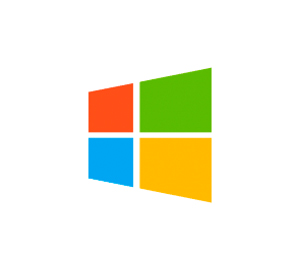
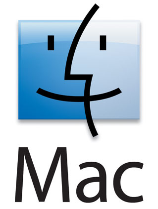
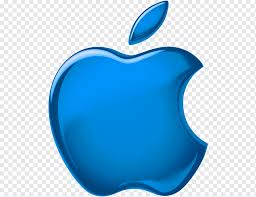
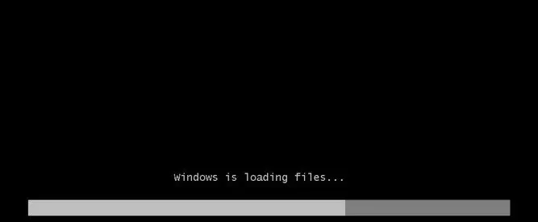

Операционные системы
1. Что такое операционная система:
Операционная система (ОС, OS, operating system) — это набор программ, обеспечивающих работу компьютера или другого устройства и взаимодействие с ним пользователя.
2. Из чего она состоит:
Ядро-Это основа операционной системы. Драйверы-Это программное обеспечение, благодаря которому операционная система работает с подключённым в устройстве «железом». Пользовательский интерфейс
Бывает графическим (GUI) и командным (CLI).
Графический интерфейс (GUI) представляет собой визуальную среду с кнопками, иконками, меню и диалоговыми окнами. Именно он используется по умолчанию в Windows, macOS, Android, iOS и средах рабочих столов Linux.
Командный интерфейс (CLI) использовался в DOS, а сейчас реализован в виде терминала в Linux и macOS и командной строки в Windows, в которых пользователь вводит команды с клавиатуры.
3. Виды операционных систем:
32-битные (x32). Адресуют до 4 ГБ оперативной памяти и могут запускать программы, написанные только под 32-битную систему. 64-битные (x64). Ограничение по оперативной памяти — до 16 ТБ. Такие ОС поддерживают 64-битные программы, а 32-битные запускают через эмулятор. Коммерческие. Это платные ОС, которые лицензируются за деньги. Как правило, у них закрытый исходный код, который принадлежит конкретной компании. Например, Windows от Microsoft или macOS от Apple.
Свободно распространяемые. Бесплатные для пользователей, но могут включать платную поддержку. Например, как у продуктов Red Hat или Canonical. Такие ОС можно свободно скачивать, распространять и даже модернизировать под себя. Главный пример — Linux, вариантов которого насчитывается уже более 500.
4. История развития операционных систем:
Первый этап (1955–1965 годы): История операционных систем начинается в 1955 году, когда инженер General Motors Роберт Л. Патрик и программист North American Airlines Оуэн Мок разработали для IBM 704 GM-NAA I/O. Её иногда называли системой ввода — вывода.
Второй этап (1965–1980 годы): В 1969 году в исследовательской лаборатории Bell Labs разработали ОС Unix. Она — основа современных операционных систем.
Третий этап (1980 — настоящее время): В это время появляются персональные компьютеры, доступные не только корпорациям и университетам, но и обычным пользователям. В 1984 году компания Apple выпускает первую систему для своих Macintosh под названием System 1, созданную на основе Alto OS. С её помощью Стив Возняк планировал избавить пользователей от сложности существующих ОС и вывести компьютеры компании на массовый рынок.
5. Какие операционные системы самые популярные:
Windows - Знакомая большинству операционная система с многолетней историей. Её главные преимущества — это дружелюбный интерфейс, обширная совместимость с программами, играми и периферией.

macOS — ОС для Macbook и iMac. Компания Apple постаралась над архитектурой своей «оси» и максимально оптимизировала её под используемые комплектующие.

Android- распространяется с открытым исходным кодом. Большое количество компаний разрабатывают на его основе собственные интерфейсные оболочки для своих Android-смартфонов.
iOS - устанавливается только на мобильные устройства от Apple. Вместе они образуют единую экосистему, что является одновременно и плюсом, и минусом.

Как работает Windows :
Ядро
Как и в других ОС, отвечает за работу с оборудованием, которое внутри компьютера находится или во время работы к компьютеру “пристёгивается”. Режим ядра полномочий имеет гораздо больше. Никакая программа, установленная в Windows, не имеет доступа к “железу” напрямую – только через шелл, который, в свою очередь, посылает все запросы к ядру. Такая система взаимодействия обеспечивает стабильную работу ОС. Это чем-то напоминает ресторан: перед тем как заказать блюдо, вам нужно позвать официанта (к шеф-повару и на саму кухню вас не пропустят).
Ядро состоит из двух компонентов:
слой аппаратных абстракций HAL – hardware abstraction layer
– (ближайший к железу уровень)
уровень исполнительных служб (обеспечивает взаимодействие подсистем в пользовательском режиме со слоем аппаратных абстракций)
Что здесь нужно запомнить? Логика работы ясна уже из описания: исполнительные службы Windows работают с оборудованием при помощи самого HAL и драйверов для конкретного устройства. Такой принцип работы устанавливается незаметно для глаз пользователя в момент установки Windows на компьютер. В тот самый момент, когда мы видим строки состояния установки компонентов и служб/программ, и строится структура слоя HAL на основе процессора, который в материнской плате вашей машины установлен. То есть привычные процессы во время установки Windows предстают теперь в таком свете:


Компоненты Windows, или из чего Windows состоит
Как работает Windows блочно можно отобразить так: